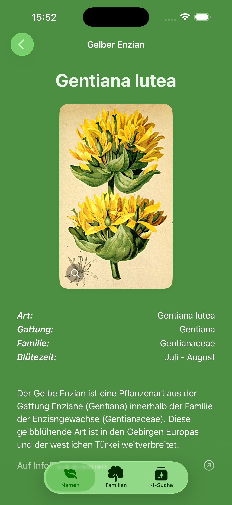
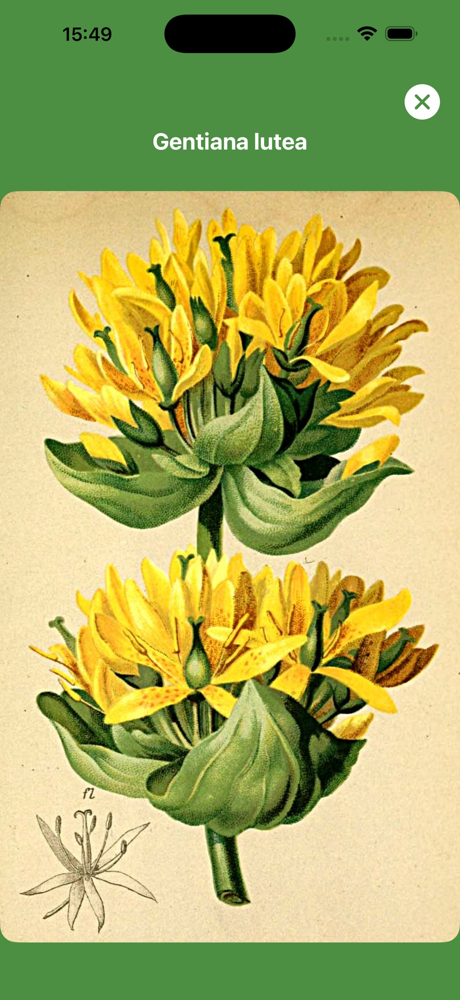
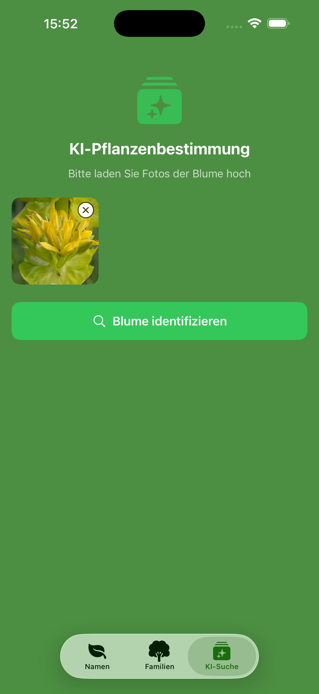
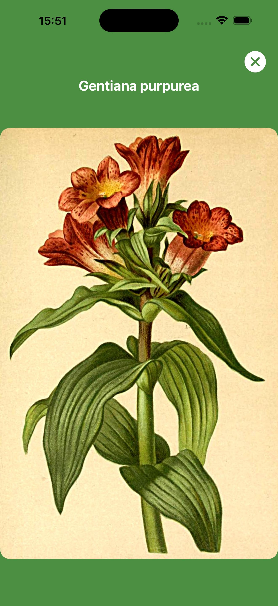

Die umfassendste Alpenblumen-App für die Schweiz. Für Naturliebhaber, Wanderer und Botanik-Begeisterte.

Detailansicht mit
botanischen Daten

170 wissenschaftliche
Illustrationen

KI-Erkennung per
Foto
Fotografiere eine Pflanze und SwissFlora erkennt sie sofort. Basierend auf der offiziellen InfoFlora-Datenbank — zuverlässig, schnell und präzise.
Durchsuche alle deutschen, französischen und lateinischen Artnamen. Egal ob du den Namen oder die Pflanze kennst.
Zeichnungen und Taxon-Datenbank vollständig offline verfügbar — ideal für Wanderungen im Gebirge ohne Mobilfunknetz.
Jede Zeichnung zeigt Blüte, Blatt und charakteristische Merkmale der häufigsten Schweizer Alpenblumen — ideal zum Lernen und Bestimmen, auch ohne Internetverbindung.
